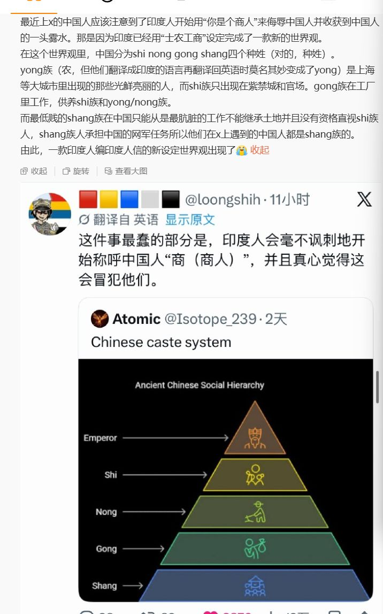
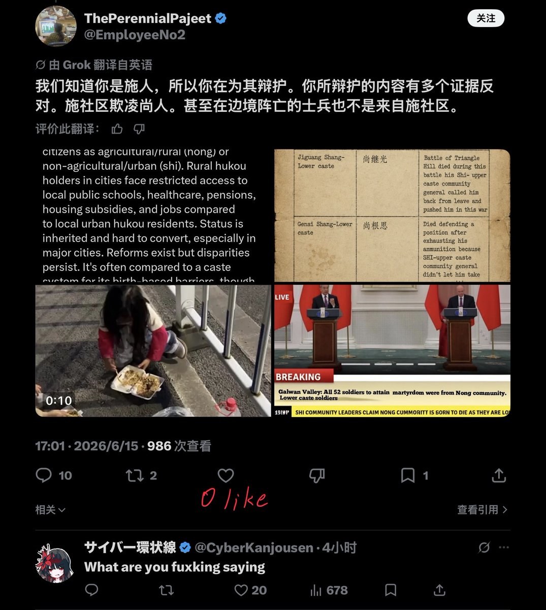

原推所回复的主题推文：



8 小时过去了，0 个喜欢。
🤣👉🤡
所谓「Shi Nong Gong Shang 中国种族」不过是印度极端民族主义者意淫出来的一个笑话，其弱智程度比我们中国的「斯奎奇大王」Alex 还要高出数倍。
Alex 口中的美国听上去至少「像真的」，但这些印度人口中的中国和现实的中国完全是不同的两个平行宇宙。 https://t.co/4qeXsT7dRm
🤣👉🤡
所谓「Shi Nong Gong Shang 中国种族」不过是印度极端民族主义者意淫出来的一个笑话，其弱智程度比我们中国的「斯奎奇大王」Alex 还要高出数倍。
Alex 口中的美国听上去至少「像真的」，但这些印度人口中的中国和现实的中国完全是不同的两个平行宇宙。 https://t.co/4qeXsT7dRm